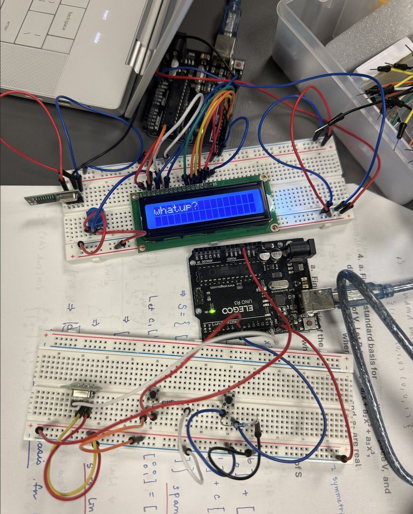

RF Telegraph
Tap Morse code on one breadboard and watch it appear as text on an LCD on the other, sent over a 433 MHz radio link.

Overview
As an RF Design Engineer with IEEE, I worked in a team of three to build a modern take on the telegraph. It uses two Arduinos: a transmitter with a Morse key, and a receiver that decodes the message onto an LCD, linked by inexpensive 433 MHz ASK radio modules.
My role
- Added the radio transmission to the Morse code logic, turning each key event into a radio packet.
- Wired the transmitter circuit: the RF transmitter module and the key and clear buttons.
- Wired the LCD display with a teammate.
- Documented the RF and LCD design and our test results.
How it works
Transmitter. The Arduino checks the key button every 100 ms and times each press. The timing follows standard Morse conventions: a dash is three dot-lengths, letters are separated by three units, and words by seven.
- A press shorter than 300 ms is a dot. A press of 300 ms or longer is a dash.
- A 300 ms pause marks the end of a letter. A longer pause adds a space between words.
- A second button clears the receiver's screen.
Each event goes out the moment it happens as a one-character packet, using the RadioHead RH_ASK driver:
0 = dot 1 = dash 2 = end of letter 3 = word space 4 = clear screenReceiver. The second Arduino collects the incoming dots and dashes. When an end-of-letter packet arrives, it decodes them into a letter and prints it on the 16×2 LCD, so the message builds on the screen as you type. Invalid sequences show as "?".
Decoding. Each letter's dots and dashes are matched against a Morse lookup string, and the matching position is read from a parallel string to get the letter. We tried a map first, but Arduino doesn't natively support maps, and the workarounds were too slow to keep up with the radio link.
Display. Two potentiometers set the LCD's contrast and backlight, so they can be adjusted instead of being fixed by resistors. A 220 Ω resistor protects the backlight.
Development
We started with a single-Arduino Morse translator in Tinkercad, with the key, decoding, and LCD all on one board. Tinkercad doesn't support RF parts, so we then split the system across two Arduinos on real hardware and added the 433 MHz link.
Results
The full system worked end to end, from keying through transmission and decoding to the display. With bare radio modules and no antennas, the link was reliable across a room, but transmissions started to drop 10–20 steps away.
What I'd do differently
- Add antennas to the transmitter and receiver, and power the radios from a higher-voltage supply, to extend range from across a room to across campus.
- Improve scrolling so messages longer than 16 characters stay readable.